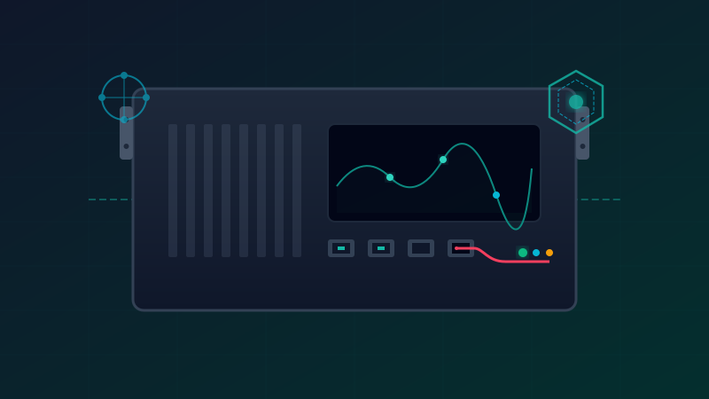

Hola, soy Juanjo Molina Ingeniero DevOps, SRE y Sistemas Linux
Cuento con más de 7 años de experiencia en el sector, compaginando el diseño de infraestructuras en la nube y flujos CI/CD automatizados con la mentoría y docencia técnica presencial y online para equipos y profesionales.
Habilidades y stack técnico
Tecnologías y herramientas que domino en el día a día para diseñar y construir software robusto.
Automatización e IaC
Infraestructura declarativa
Provisión inmutable de recursos multi-región y ciclo de vida de infraestructura codificada. Diseños modulares reutilizables para evitar duplicidad y garantizar reproducibilidad absoluta.
Orquestación y redes
Kernel y container engine
Gestión de clústeres Kubernetes bare-metal e híbridos. Configuración avanzada de políticas de red de mínimo privilegio y enrutamiento directo con Cilium eBPF a nivel de socket.
Sistemas y observabilidad
Desarrollo y telemetría
Desarrollo backend altamente concurrente y optimizado. Diseño de stacks de monitorización centralizados LGPM correlacionando trazas de logs y métricas clave para reducir el MTTD.
Docencia y mentoría IT
Clases particulares online
Mentorías 1-a-1 y clases particulares online enfocadas en acelerar la adopción de Linux, DevOps y Kubernetes. Explicaciones conceptuales con aplicaciones prácticas.
Educación
Sistemas y redes (2017)
Técnico en Sistemas Microinformáticos y Redes por el IES Francisco de Goya. Sólida base práctica en administración de sistemas locales y despliegue de redes.
Idiomas
Competencia C1 / nativo
Español nativo e inglés con nivel C1 certificado. Experiencia impartiendo formación técnica y colaborando activamente en inglés con equipos internacionales.
Trayectoria y evolución profesional
Desde la administración de servidores físicos locales hasta el diseño de arquitecturas cloud modernas y la mentoría IT.
Consultor IT y Trainer
Remoto
Compagino mi actividad como consultor de infraestructuras complejas con mi vocación por la formación técnica. Asesoro a empresas en el diseño de flujos GitOps automatizados y robustecimiento de seguridad en clústeres Kubernetes, mientras dicto mentorías personalizadas de Linux, redes y DevOps, diseñando laboratorios prácticos e interactivos para acelerar el aprendizaje.
Ingeniero DevOps & SRE
Madrid / Remoto
En esta etapa me consolidé como DevOps y SRE Senior, asumiendo la responsabilidad de diseñar arquitecturas multinube críticas y de alta disponibilidad. Llevé a cabo la automatización integral de la infraestructura mediante Terraform y Terragrunt, programando además herramientas CLI personalizadas en Go y Python para optimizar la eficiencia operativa del equipo.
Linux & Cloud Engineer
Barcelona
Dejé atrás la dependencia del hardware físico para centrarme por completo en entornos Cloud y el paradigma nativo de la nube. Me especialicé en descomponer monolitos tradicionales y migrar infraestructuras locales críticas hacia Google Cloud Platform (GCP), adoptando por primera vez Kubernetes (GKE) como el estándar para orquestar microservicios en producción.
Junior SysAdmin
Oxford, Reino Unido
Mis primeros pasos se centraron en dominar los cimientos de la infraestructura clásica: administración de servidores Linux y entornos complejos de virtualización sobre hipervisores ESXi. Más allá de resolver incidencias del día a día, fue en esta etapa donde comencé a automatizar tareas rutinarias e introducir contenedores en entornos locales, transformando el mantenimiento manual en flujos repetibles.
Blog y artículos técnicos
Guías detalladas, notas de arquitectura y tutoriales prácticos sobre infraestructura, automatización y redes.

Clúster Kubernetes Bare-Metal: AlmaLinux 10, k0s y Cilium (Single-Node)
Guía completa para desplegar un nodo único de producción en un servidor físico. Hardening perimetral, configuración declarativa, enrutamiento eBPF con Cilium y entrada de tráfico con Traefik.
Hablemos de tu próximo gran proyecto
¿Tienes problemas de escalabilidad en tu infraestructura? ¿Necesitas asesoramiento técnico para migrar a Kubernetes o buscas incorporar un perfil técnico senior a tu equipo? Contáctame y busquemos la mejor solución.